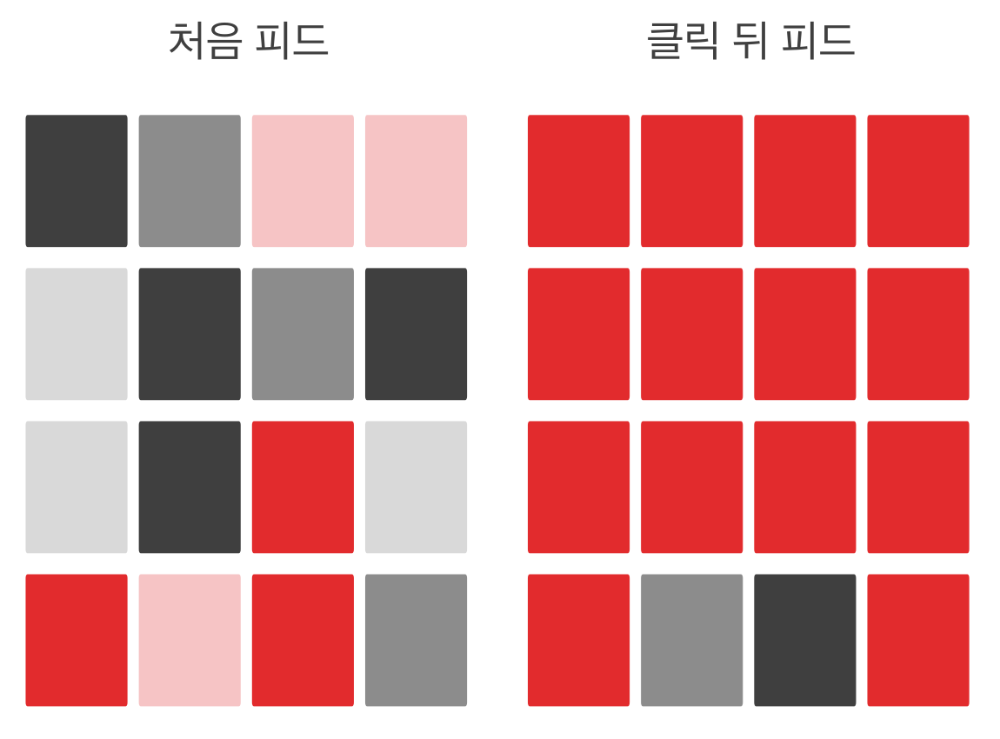
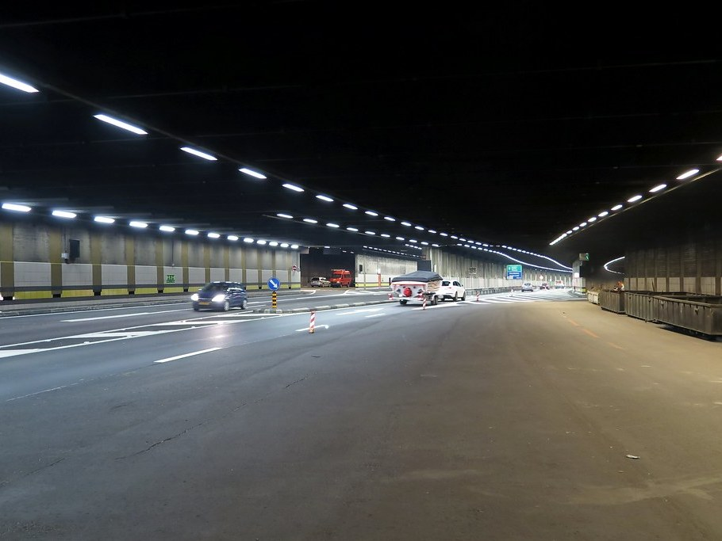
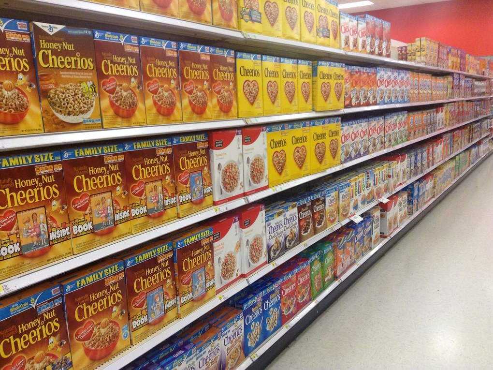
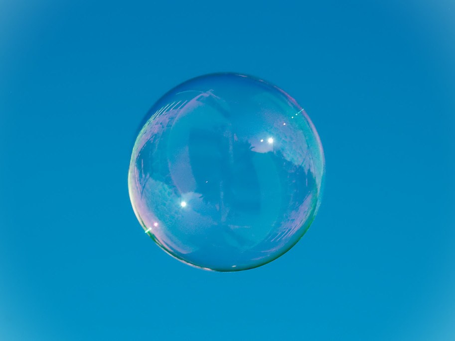

11
데이톨로지 — 데이터로 읽는 인간과 사회
알고리즘 큐레이션의
양면성
주교재: 김성태, 『데이톨로지』 2부 · 연재 ⑦ · 강사 : ○○○

CONTENTS
알고리즘
큐레이션의
양면성

학습 목표
목표 1
선택의 역설, 에코챔버, 필터버블의 구분
목표 2
내 정보 환경 점검과 “버블 터뜨리기” 전략 수립
오늘의 질문
미시령 터널은 고개를 넘는 시간을 크게 단축
그런데 우리가 잃은 것은?
추천 알고리즘과 하이웨이 이펙트
[비유] 터널

사진: Kecko / CC BY 2.0
터널 = 알고리즘 추천
- 원하는 목적지까지 가장 빠른 길
- 고갯길의 풍경·우연한 발견은 생략
- 추천: 내가 좋아할 것만 빠르게 도착
- 편리함의 대가 = 보지 못한 세상
추천 알고리즘과 하이웨이 이펙트
고갯길(탐색) vs 터널(추천)
추천 알고리즘과 하이웨이 이펙트
이미 일상이 된 큐레이션
카카오 ‘루빅스’ (2015~)
개인 맞춤형 뉴스 추천
네이버 ‘에어스’ (2017~)
개인 맞춤형 뉴스 추천
2021.6 포털 AI 추천 논의
AI 뉴스 추천 제거 방안 추진
→ 이용자가 언론사를 고르는 방식 예고
구글 ‘AI 퍼스트’ (2021.5)
순다 피차이, I/O에서 AI 추천 확대
맞춤형 광고·넷플릭스 첫 화면도 같은 원리
편리함의 논리: 선택의 역설
[비유] 시리얼 진열대

사진: JeepersMedia / CC BY 2.0
시리얼 진열대 = 선택 과잉
- 수십 종의 상자 앞에서 망설임
- 고른 뒤에도 “다른 게 나았을까” 후회
- 선택지가 많을수록 만족 하락 가능
- 추천 = 진열대를 대신 골라 주는 점원
편리함의 논리: 선택의 역설
선택지가 늘수록 만족도는 오르다 내려감 (개념도)
위험의 논리: 에코챔버·필터버블
[비유] 비눗방울

사진: trindade.joao / CC BY 2.0
비눗방울 = 필터버블
- 투명해서 갇힌 줄 모르는 막
- 안에서 보이는 세상 = 알고리즘이 거른 정보
- 클릭할수록 두꺼워지는 막
- 스스로는 터뜨리기 어려운 구조
위험의 논리: 에코챔버·필터버블
클릭 → 추천 → 클릭: 피드가 한 가지 색으로
위험의 논리: 에코챔버·필터버블
같은 추천, 두 얼굴
편리함의 논리
- 선택의 역설 (배리 슈워츠): 큐레이션 = 구원
- 하이웨이 이펙트: 원하는 곳에 빠르게
- 원하는 정보의 편리한 제공
위험의 논리
- 에코챔버 (캐스 선스타인): 같은 목소리만 메아리, 편향 강화
- 필터버블 (엘리 패리저): 알고리즘이 거른 정보에 갇힘
- 상업적 판단의 개입 가능성
인문학의 연원과 버블 터뜨리기
[비유] 동굴과 바깥의 빛
사진: romainguy / CC0
동굴 = 동굴의 우상 (베이컨)
- 저마다의 경험·성향이 만든 좁은 동굴
- 동굴 안의 세상 = 내가 아는 전부라는 착각
- 필터버블 = 알고리즘이 파 준 디지털 동굴
- 벗어나는 길: 바깥과 소통, 다른 의견 듣기
인문학의 연원과 버블 터뜨리기
필터버블의 오래된 이름들
동굴의 우상
베이컨 · 개인의 특수한 편견
시뮬라시옹
보드리야르 · 가상이 실재보다 더 실재 같음
선택적 노출
기존 신념과 맞는 정보만 수용
프레이밍
고프만 · 세상을 해석하는 준거틀
게이트키핑
슈메이커 · 보도할 뉴스를 고르는 선별
알고리즘
새로운 게이트키퍼이자 프레임
인문학의 연원과 버블 터뜨리기
위험: 정보 편식 → 양극화·파편화
기업
설계
- MIT 미디어랩 ‘플립피드’: 반대 성향 피드 체험
- 반대 성향 뉴스 삽입 프로그램
정부·사회
구조
- 다양한 의견을 공유·논의하는 구조
- 민주주의의 기반
소비자
습관
- 의도적으로 다른 관점 찾기
- 추천 밖의 직접 검색
“버블 터뜨리기”의 본격적 시작
인문학의 연원과 버블 터뜨리기
[보충] 데이터 리터러시로 다시 보기
필터버블 효과 크기 논쟁
이후 연구: 알고리즘보다 사용자 자신의 선택(선택적 노출)이 더 크다는 반론 존재
→ 책임은 알고리즘 vs 클릭하는 나?
선택의 역설 재현성
잼 실험류 연구의 효과가 메타분석에서 일관되지 않음
→ 유명한 연구도 근거의 크기 확인 필요
활동: 내 피드 감사(audit)
60분 · 개인 → 짝 → 1주 실험
STEP 1 · 15분
기록
- 유튜브 홈 상위 20개
- 주제·관점·출처별 분류
STEP 2 · 30분
비교
- 짝과 화면 비교
- 겹치는 비율 계산
- 내 버블의 색은?
STEP 3 · 15분
실험 설계
- 1주일간 하루 3개 다른 관점 시청
- 다음 주 추천 화면 변화 보고
정리 및 확인 문제
오늘의 핵심 4줄
하이웨이 이펙트 = 추천은 빠르지만 우연한 발견을 생략
선택의 역설 = 선택 과잉의 피로 → 큐레이션의 존재 이유
에코챔버 · 필터버블 = 같은 목소리, 거른 정보에 갇힘
버블 터뜨리기 = 기업 · 정부 · 소비자 모두의 몫
정리 및 확인 문제
확인 문제
문제 1
추천 알고리즘을 옹호하는 근거가 되는 슈워츠의 개념
문제 2
“알고리즘이 걸러 준 정보의 거품에 갇힘”과 “비슷한 생각의 사람들끼리 메아리”, 각각의 이름
문제 3
언론사가 보도할 뉴스를 고르는 과정을 뜻하는 개념과, 오늘날 그 역할을 나눠 맡은 것
문제 2: 필터버블(패리저) / 에코챔버(선스타인)
문제 3: 게이트키핑(슈메이커) — 추천 알고리즘
정리 및 확인 문제
마무리
이번 주 과제
- 연재 ② 「디지털이 만드는 새로운 세상」 읽기 + 사전 질문 1개
- 버블 실험 1주 진행 (하루 3개 다른 관점)
- 데이톨로지 저널: 내 추천 화면의 변화 캡처
다음 시간
메타버스와 공간미학 — 공간 욕망의 디지털 귀결
이미지 출처
사진 (Openverse 검색, CC 라이선스)